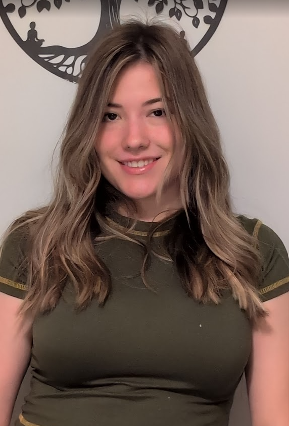
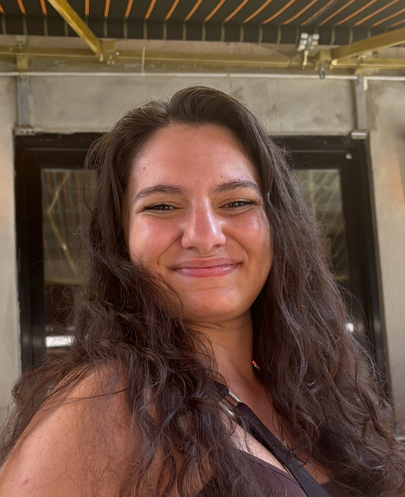

Home
This is our homepage
Meet the Creators
Welcome, covert channel fans!
About the creators

Cambria is in her last semester at RIT, graduating with a double major in Cybersecurity and Public Policy. After graduation, she is looking to work in compliance, mainly with non-profit organizations. In her free time, she enjoys hiking, playing the piano, cooking, and crocheting.

Gweneth is in her last year at RIT. She will be graduating in May 2026 with a Bachelor's Degree in Cybersecurity. Gweneth has plans to work as a system administrator while dabbling in penetration testing. In her free time, Gweneth is usually found at a new cafe with friends trying whatever was latest recommended to her through her For You page.